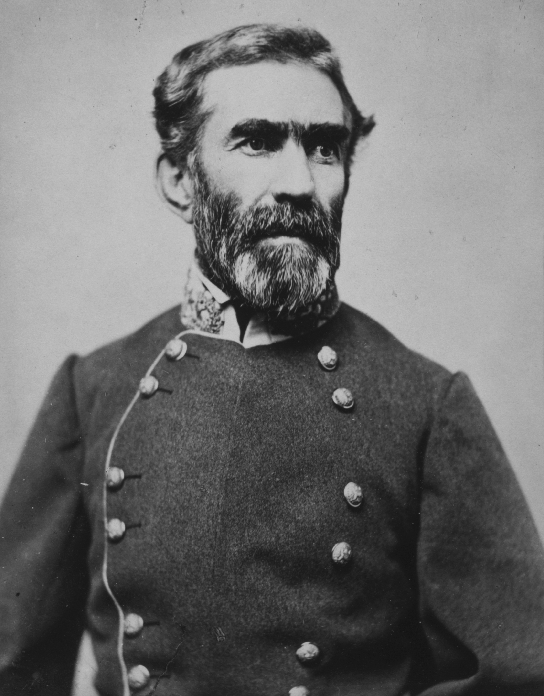
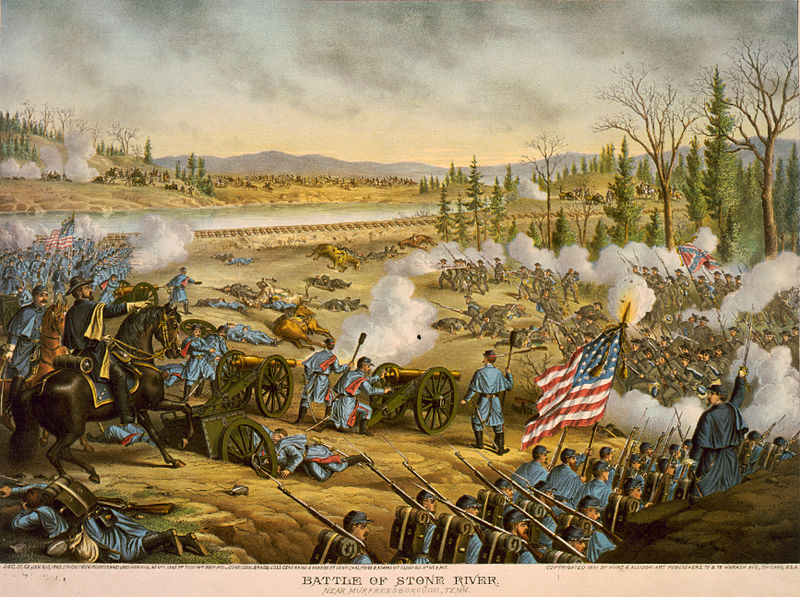

|
The Battle of Murfreesboro (or Stones River as it is also
known) brought a much needed victory for the North, but one
that came at a high price. Following his failed invasion of
|

Gen. Braxton Bragg
|
Kentucky, in mid November 1862 Confederate General Braxton
Bragg moved his Army of Tennessee into central Tennessee
aiming to reclaim a large portion of that state and in the
words of President Davis, help the Confederacy "recover from
the depression produced by the failure in Kentucky." Union
forces under the command of General William Rosecrans
countered this move by taking position around Nashville.
Not an aggressive fighter, Rosecrans settled into
resupplying and resting his Army of the Cumberland.
Rosecrans' inaction quickly ended under pressure from
politicians claiming that the Union war effort was moving
too slowly. The December disaster at Fredricksburg and
General Ulysses S. Grant's stalled invasion of Mississippi
further eroded public confidence. In response, President
Lincoln and General-in-Chief Henry W. Halleck urged
Rosecrans to move on the Rebels. On December 26, 1862 he
began a general advance on Murfreesboro. A cold rain fell
on the Federal soldiers as they marched south from
Nashville. Sleet, fog, and icy roads continued to plague
Rosecrans, but by December 29th and 30th his army began to
move in on the Rebel troops.
At 6:30 a.m. on December 31st, Bragg launched a major
attack sending his left-most divisions forward with
instructions to drive back enemy forces while turning to the
right. The attack caught the Union troops off guard and
overwhelmed them. Within half an hour, two Union divisions
had been driven from the field, disorganized and
demoralized. However, Bragg's overly complex plan caused
severe confusion among his troops. Federal resistance also
stiffened as Union soldiers took strong positions among the
cedar glades and limestone outcroppings.
The Confederates continued to push, however, and by noon
Union forces had been forced back into a line almost
perpendicular to their original position just in front of
the main line of retreat, the Nashville Pike. The line
along the Nashville Pike was a strong one on a slight rise
in front of largely cleared fields. Confederate attacks
were thrown back by rifle and artillery fire and the
Confederate advance ground to a halt in a series of poorly
coordinated assaults. After a day of resting and watching
Union forces dig in, on January 2nd, Rebel troops launched
an attack on the Federals' left flank. The Confederates
|

As with many Civil War battles, the
Confederacy and Union has different names for
Murfreesboro. In the Union, the battle was known
as Stones River, and is identified as such in this
Currier & Ives lithograph.
|
were beaten back, suffering heavy casualties especially
among the Kentucky units led by General John C.
Breckinridge. On January 3rd Bragg retreated to a position
near Shelbyville and Tullahoma, Tennessee.
The battle was costly. Both armies lost nearly one third
of their total forces in killed, wounded, and missing. Of
the 41,400 Federal troops, 12,906 were casualties; the
Rebels suffered 11,739 losses out of a total of 34,739.
Union forces alone had a 31% casualty rate, which made
Murfreesboro the War's most deadly battle when casualties
were looked at in proportion to the number of troops
fighting. The forced retreat of the Army of Tennessee
brought a glimmer of hope to the North and diminished some of
the Copperhead sentiment, but it left Rosecrans' army badly
crippled. For the Confederacy, Stones River was terrible
news. Bragg, never popular with other commanders, was even
less so now. Bragg went so far as to offer to resign, but
Jefferson Davis left him in command, thus setting the stage
for continued divisiveness and in-fighting within the
western Confederate Army.
Source: Joan Waugh, ed., Facts on File Encyclopedia of American
History: Civil War and Reconstruction, 1856 to 1869 (New York: Facts on
File, 2003), 242-243.
|